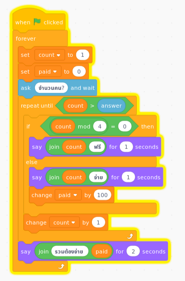

| ตอนที่ 1 | ตอนที่ 2 | ตอนที่ 3 |
TLDR: ภาษา functional ช่วยให้เห็น function composition ได้ชัดเจน ในขณะที่ภาษา imperative อาจะทำ function composition ได้แต่มักจะอ่านยากกว่า
ตอนที่ 1 : map/reduce pipeline
ได้พบโจทย์ปัญหาโปรแกรมข้อหนึ่งในกลุ่ม programming เห็นว่าเป็นปัญหาง่าย ๆ ที่น่าสนใจดี (เปลี่ยนราคาเป็น 100 เพื่อความง่ายในการคิดในใจ)
ร้านหมูกะทะแห่งหนึ่งจัดรายการส่งเสริมการขายมา 4 จ่าย 3 จงเขียนโปรแกรมรับจำนวนคนที่ใช้บริการแล้วคำนวณหาจำนวนเงินที่ต้องจ่าย เมื่อร้านคิดราคาหัวละ 100 บาท
ความน่าสนใจของปัญหานี้คือมี pattern ของการโปรแกรมที่พบได้บ่อยคือ map/reduce (split-apply-combine) ที่ประกอบด้วย
- filter
- map
- sum (reduce)

Scratch
ได้ทดลองแก้ปัญหาแบบ imperative ด้วย scratch ไว้ ที่นี่

Python
ซึ่งแปลงเป็น python แบบตรงตัวได้ประมาณนี้
def calculate(n):
count = 1
paid = 0
answer = int(n)
while True: # python doesn't have repeat until
if count > answer: # emulate with while and if
break
if count % 4 == 0:
print(f'{count} ฟรี', end='')
else:
print(f'{count} จ่าย', end='')
paid += 100
print(', ', end = '')
count += 1
print()
print(f'รวมต้องจ่าย {paid}')
while True:
calculate(input('จำนวนคน ?\n> '))หรือถ้าอยากทำใ้ห้สั้นแบบ code golf ก็ได้ประมาณนี้
ซึ่งการเขียนด้วย Python แบบทั่วไปจะมองไม่เห็น map, filter, fold ที่ซ่อนอยู่ได้ชัดเจน
หากลองเขียนด้วย Python ตาม pipeline ก็จะได้ประมาณนี้
while True:
heads = range(int(input('จำนวนคน ?> ')) +1)
fheads = filter(lambda x: x % 4 != 0,heads)
pheads = map(lambda _: 100, fheads)
ans = sum(pheads)
print(f'รวมจ่าย {ans}')ลองเอาตัวแปรชั่วคราว (intermediate) ที่ไม่จำเป็นต้องใช้ออก เพื่อทดลองทำ function composition จะพบว่าอ่านยากขึ้นกว่าเดิมเพราะวงเล็บซ้อนกันหลายชั้น (subjective)่่
while True:
print(sum(
map(lambda _: 100,
filter(lambda x: x % 4 != 0,
range(int(input('จำนวนคน ?> ')) +1)))))นอกจากนี้แล้ว การเขียนด้วย map, filter และ reduce ออกจะไม่เป็น pythonic เมื่อเทียบกับการใช้ list comprehension (ตีความตามที่ผู้ออกแบบภาษา Python ได้เขียนไว้)
Haskell
การแสดงการ compose ที่ชัดเจนจากได้จากการเขียนด้วยภาษา functional เช่น Haskell
main :: IO ()
main = do
putStr "จำนวนคน?\n> "
n <- readLn
print $ compute [1..n]
main
compute :: [Int] -> Int
compute = sum . map (const 100) . filter ((/= 0) . flip mod 4)argument ของ map คือ function const :: Int -> a -> Int ที่ไม่สนใจสมาชิกใน List เดิมว่าคืออะไร เปลี่ยนให้เป็น 100 :: Int
argument ของ filter ดูจะอ่านยากหน่อย เพราะลดรูปไปอยู่ในแบบ point free
หากแยก filter predicate กับ mapping function ออกมาและเขียน type กำกับเพื่อให้อ่านง่ายขึ้น
compute :: [Int] -> Int
compute = sum . map m . filter p
where
p :: Int -> Bool
p x = x `mod` 4 /= 0
m :: Int -> Int
m _ = 100ตอนหน้า เขียนเรื่องของโครงสร้าง recursive ของ List และ fold เพื่อสร้าง high order function ของ List (map, filter, sum)